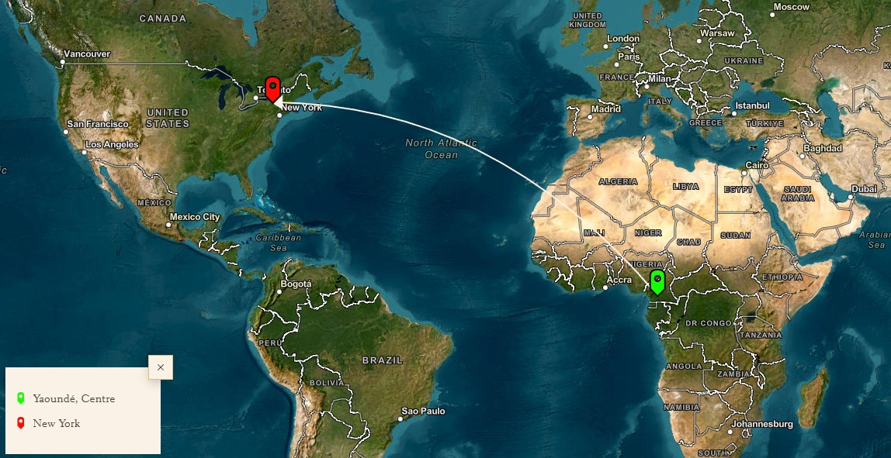
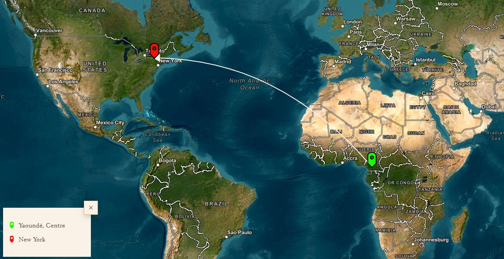

Novel : Mount Pleasant
In 1931, nine-year-old Sara is torn from her mother and offered to Sultan Njoya, joining his 681 wives at Mont Plaisant in Yaoundé, where Njoya has been exiled by the French occupiers. However, due to unforeseen circumstances, the matron preparing Sara decides to disguise her as a boy: from now on, she will live at court under the name Nebu, while outside, nations prepare for World War II. Seventy years later, Sara recounts her story filled with incredible characters to Bertha, a young Cameroonian student in the United States who has returned home. Among these characters is Sultan Njoya himself, a man curious about sciences, the inventor of an alphabet, surrounded by a colony of artists, striving to make his people's refined culture thrive. We also encounter Joseph Ngono, a former professor at the University of Berlin, who has decided to return to Cameroon, only to face bitter disappointment. Joseph is also Sara's father. Mont Plaisant is an ambitious, masterfully constructed novel about love, power, the ravages of colonialism and wars, the beauty of Bamoun civilization, the vitality of its art, and the tragedy of its decline.

Author : Patrice Nganang
Patrice Nganang is a Cameroonian writer, author of more than fifteen books including the novel Dog Days for which he won the Marguerite Yourcenar Literary Award and the Black African Literary Grand Prize. He is Head of the Department of African, African American and Caribbean Studies (Africana) at the State University of New York, Stony Brook where he teaches literary and cultural theory.
Mapping of the Transatlantic Journey
 
